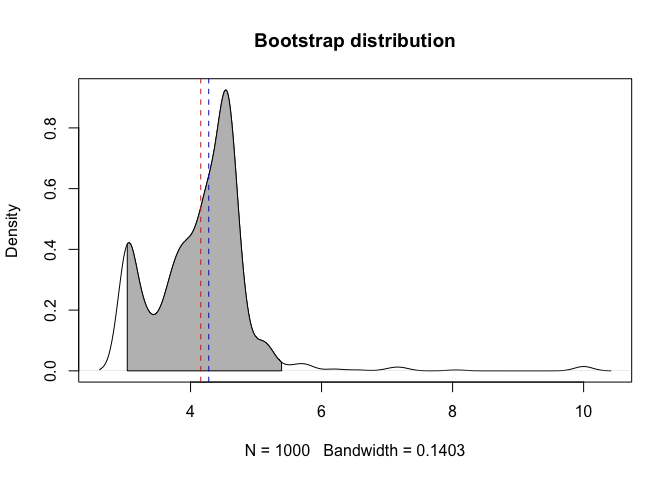

R package for fitting and testing alternative models for single cohort litter decomposition data
Installation
#install.packages("remotes")
remotes::install_github("cornwell-lab-unsw/litterfitter")
library(litterfitter)Getting started
At the moment there is one key function which is fit_litter which can fit 6 different types of decomposition trajectories. Note that the fitted object is a litfit object
fit <- fit_litter(time=c(0,1,2,3,4,5,6),
mass.remaining =c(1,0.9,1.01,0.4,0.6,0.2,0.01),
model="weibull",
iters=500)
class(fit)You can visually compare the fits of different non-linear equations with the plot_multiple_fits function:
plot_multiple_fits(time=c(0,1,2,3,4,5,6),
mass.remaining=c(1,0.9,1.01,0.4,0.6,0.2,0.01),
model=c("neg.exp","weibull"),
iters=500)Calling plot on a litfit object will show you the data, the curve fit, and even the equation, with the estimated coefficients:
plot(fit)
The summary of a litfit object will show you some of the summary statistics for the fit.
#> Summary of litFit object
#> Model type: weibull
#> Number of observations: 7
#> Parameter fits: 4.19
#> Parameter fits: 2.47
#> Time to 50% mass loss: 3.61
#> Implied steady state litter mass: 3.71 in units of yearly input
#> AIC: -3.8883
#> AICc: -0.8883
#> BIC: -3.9965From the litfit object you can then see the uncertainty in the parameter estimate by bootstrapping
